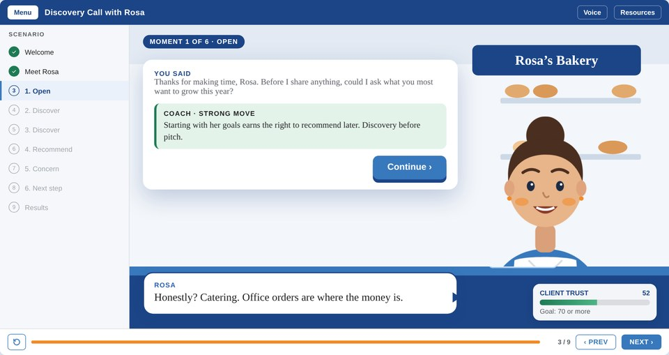

From Hello to First Pitch: Ads Seller Onboarding

Click the image to experience the project.Purpose: Sparrowline Ads, a fictional search ad platform, needs its new small-business sellers to start productive client conversations sooner. New sellers usually spend weeks in slide-heavy training, and their first calls turn into product pitches. The purpose of this onboarding sprint is twofold: first, to cut the time to a seller’s first qualified pitch from about 20 days to 10; and second, to have at least 80% of first live calls end with a dated next step, as rated by managers with the first-call rubric. Over five days, a pre-check lets sellers test out of topics they already know, four microlearning cards cover search ads essentials, a call planner supports the real workflow, an AI client role-play gives safe practice with coaching, and a 5-question scenario check confirms readiness at 4 of 5 or better. The sprint serves new hires with and without sales experience, and each step unlocks when the one before it is done. The client call is also built as a branching scenario on the Storyline 360 slide model.
Tools: Claude (scenario drafting and persona prompts), HTML, CSS, JavaScript
Highlights: Sales onboarding, microlearning, interactive job aid, AI role-play with coaching feedback, Storyline-style branching scenario (slides, layers, character states, variables, triggers), scenario-based assessment with an item bank, personalized learning path, ramp metrics, Action Mapping, Gilbert’s Behavior Engineering Model, ABCD objectives, retrieval practice, Kirkpatrick evaluation plan
Project Deliverables: Full Case Study, Interactive Demo, Branching Scenario (Storyline-style), Storyline 360 Build Guide, AI Client Persona Prompt, Scenario Drafting Prompt, First-Call Rubric